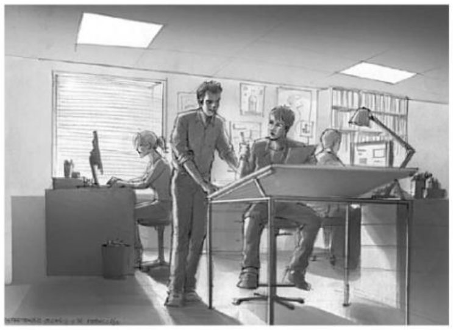
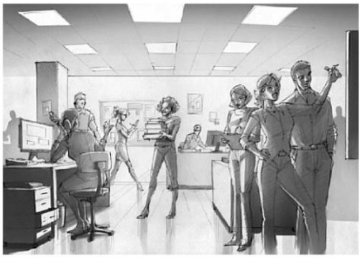
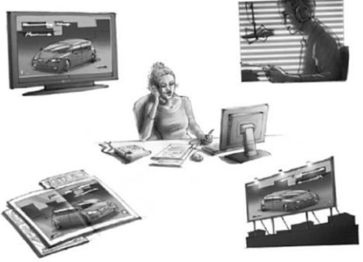
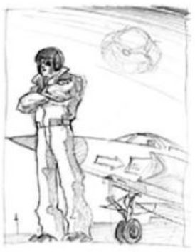
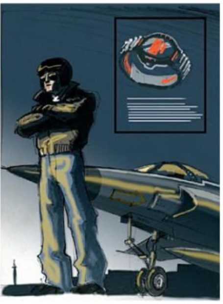
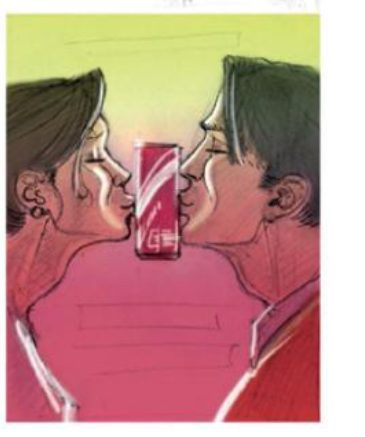
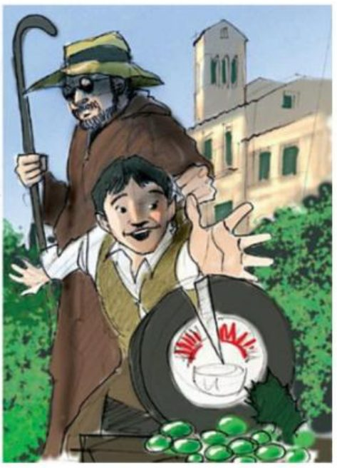
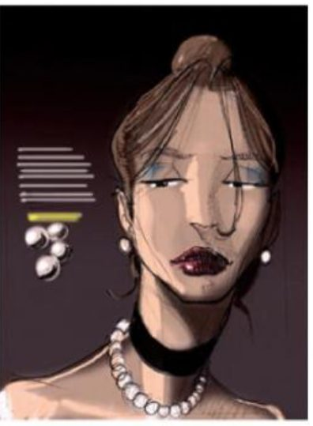
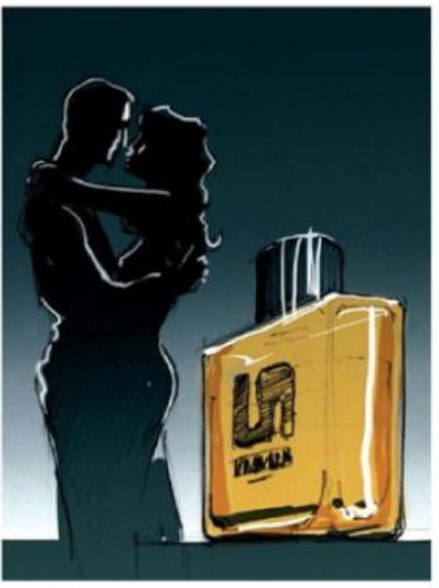

Recibe al anunciante y define con él cómo enfocar su producto hacia el mercado. Las agencias de publicidad no venden algo ya hecho: crean un producto a pedido del cliente. Por eso primero deben conocer a la organización, su idea, su mercado y su público.
Una agencia grande de servicios plenos reparte el trabajo en departamentos. El mismo esquema se repite para cada cliente y campaña. Conoce la función de cada uno.
Es el contacto con el anunciante. Entiende sus objetivos, reúne información, pone en marcha al equipo y coordina el proceso en los plazos.
Es el núcleo de la agencia. Busca el mensaje, crea la idea, la adapta a cada medio, diseña el material para aprobación y supervisa la producción.

Analiza producto, público, mercado y competencia para que la campaña no se base en la intuición.

Decide por qué medios llega el mensaje. Hace seguimiento de audiencias, planifica y compra espacios (TV, prensa, exterior, cine, radio).

Controla los procesos internos: fechas, presupuestos y abastecimiento de materiales y contactos.
Gestiona las finanzas, paga a colaboradores y proveedores, y controla presupuestos y contabilidad.
Aunque el anuncio final sea una valla o una fotografía, la idea se prueba y se aprueba primero sobre un layout hecho por un dibujante publicitario. El boceto ya debe transmitir una sensación concreta.


Estas son las cinco emociones que el libro propone para conectar un producto con el público.
Hace la marca más reconocible y deja buena predisposición. Hay que encontrar el tono y conocer a la audiencia. Recursos: sorpresa visual, final inesperado, otra perspectiva, caricatura.
Humor con exageración extrema. La sátira ataca algo con intención burlesca; la parodia imita una obra ajena para ridiculizarla.
Transmite distinción y elegancia. Es típica de perfume, coches y moda, a menudo en blanco y negro con el producto a color.
Lo atractivo capta la atención. Su uso depende del anunciante y del país, y puede servir en campañas de prevención para jóvenes.
La audiencia comparte un momento de gloria. Funciona mejor con personajes cercanos al ciudadano medio; un superhéroe aleja al espectador.
No hay una regla fija: todo depende del producto, del público y del contexto. Mira cada imagen, piensa qué emoción representa y toca la tarjeta para comprobarlo.

¿Qué emoción transmite?

¿Qué emoción transmite?

¿Qué emoción transmite?

¿Qué emoción transmite?
¿Qué emoción transmite?